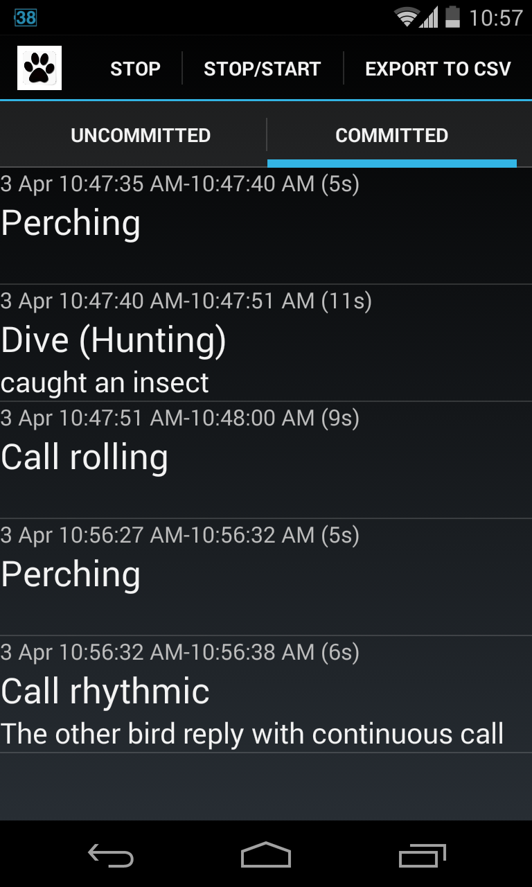
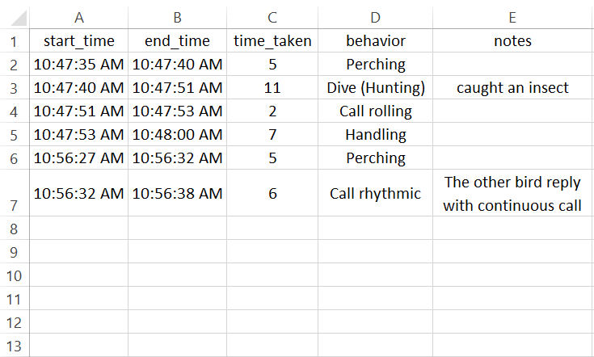

What are the common calls of
Collared Kingfisher
(Todiramphus chloris humii)
and what do the calls mean?
Group 34: Benjamin Thian Chang Yi // Koh Poh Chiat // Chong Yun Long
Antonius Christian
// Terence Tan Swee Khoon
Introduction
Why calls of Collared Kingfisher
All around us
Small and feisty
Noisy and loud for their size
Not done before
Characteristics
White Collar, blue body, long beak
Females are more greenish

Territorial, always in a pair

Feed on wide variety of animals
Not only fish! worms, frogs, crustaceans, insects ...


Preliminary
Studies
Recce
NUS Lovers Park
In NUS with seats!
No thick vegetation, easy to keep track of bird movement
Habituated to humans
Calls
Varies with subspecies
humii
Rhythmic
Continuous
Rolling
Flight
Rhythmic

...
3,4,5 repetitions
Loud
Longest call Duration
Continuous

2 Notes
chi-kee, chi-kee
Tail bobs during call
Rolling
te-ree, te-ree
Soft
Heard mostly when arriving on a perch
Crackle
Loud
Seldom heard
Only heard when flying off with partner
Methodology
Past methods
Playback experiments (cite paper)
Our method
Suggested by TA
Focal sampling a pair of birds and their activities over a cumulative period of 12 hours from 8-12am
Discard any data if only 1 bird
Activity changes too fast
for pen and paper!
Android App!
Timing handled by the app
Ethogram is consistent among group members
Still need 2 pairs of eyes per bird
Ethogram Granularity
Too fine, difficult to keep track
Too coarse, lose detail
Perching
Solo Flight
Pair Flight
Hunting
Handling + Processing
Continuous Call
Rhythmic
Rolling Call
Crackle Call
Perching
Fluffing of plumage
Beak wiping
Pruning
High alert
Beak wiping
Solo Flight
Perch to perch
Pair Flight
Start of flight
Flight in same direction
Start of flight $\pm$ 2 secs
Hunting
dive down $\to$ land on ground/branch $\to$ hop $\to$ pecking $\to$ return back to perch
fly to trunk/branch $\to$ pecking $\to$ return back to perch
Handling + Ingestion
prey pounding $\to$ head tilt upwards $\to$ swallowing
Results
Raw Data
Data analysed
Call frequency
Average call duration
Activities 5 secs before call
Activities 5 secs after call
Partner activities 5 secs before call
Partner activities 5 secs after call
Continuous
12.22 secs
5.25 calls/hr
After solo $\rightarrow$ flights
After hunts
Response to partner's rhythmic calls
Rhythmic
32.56 secs
6.75 calls/hr
Continuation of rolling calls
Triggers continuous calls in mate
After partner flight/hunt
Rolling
5.038 secs
6.58 calls/hr
After solo flights
Prelude to rhythmic calls
Comment ...
Comment ...
Crackle
6.375 secs
0.67 calls/hr
Rare. Only 8 calls observed.
Comment about results
Comment ...
Comment ...
Comment ...
Conclusion
Rolling call is contact call Verified by paper
Comment ...
Comment ...
Limitations
Actions too fast and sometimes missed (mitgated by app)
Only 1 pair of birds
Did not factor communication with neighbours (long distance call)
Other
Observations
Good eyesight
Able to spot worms far away
Territorial
Dogfight with trespassing kingfishers
Bathing
Dive into water multiple times
Beak wiping after feeding
video clip